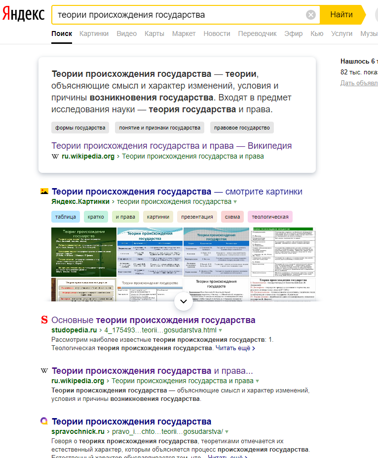
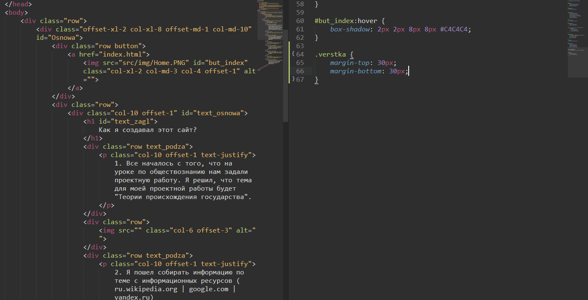
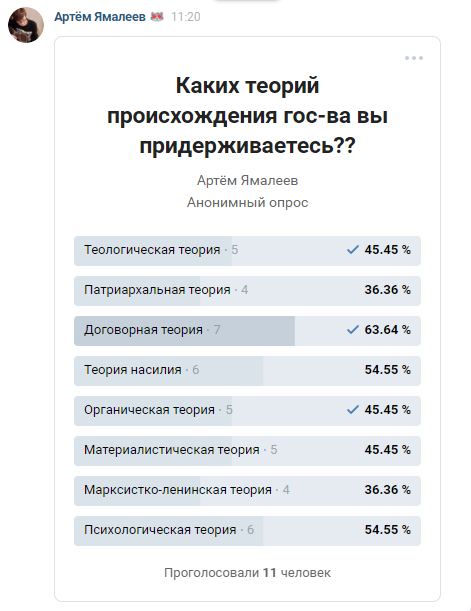

Как я создавал этот сайт?
1. Все началось с того, что на уроке по обществознанию нам задали проектную работу. Я решил, что тема для моей проектной работы будет "Теории происхождения государства".
2. Я пошел собирать информацию по теме с информационных ресурсов (ru.wikipedia.org | google.com | yandex.ru)

3. Попросил друга дать идею по дизайну. Он предложил, чтобы сайт выглядел, как лист А4.
4. Нарисовал дизайн сайта и начал верстать.

5. Запустил опрос среди своих одноклассников, каких теорий происхождения гос-в они придерживаются.

6. Доработал сайт и загрузил его на хостинг github
На этом все, это все шаги по созданию сайта. Спасибо за то, что посетили мой сайт :3